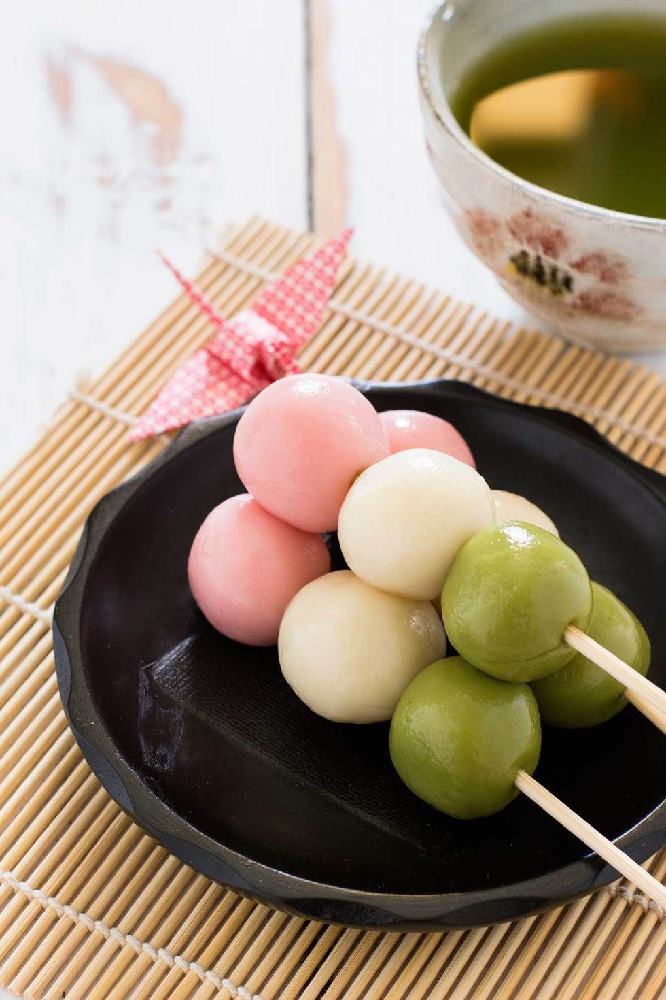
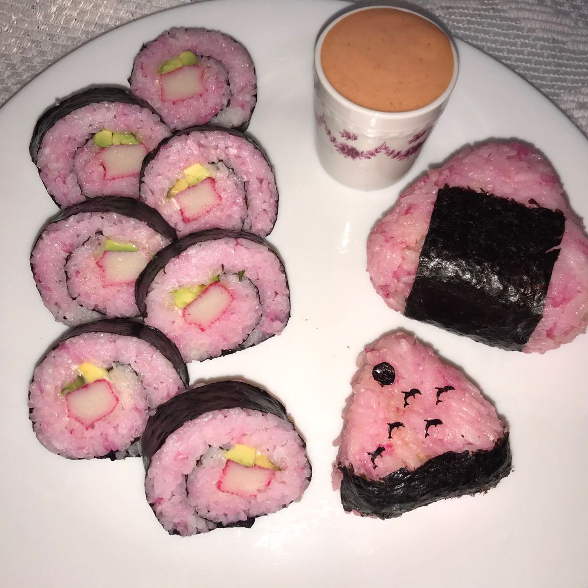

Also known as 'fuwa fuwa' (meaning fluffy fluffy in Japanese) pancakes, this Japanese souffle pancake recipe creates the jiggliest, dreamiest pancakes. I haven't got the chance to buy this because it's a bit too pricey.

Japanese Hanami Dango
Firm, colorful rice balls that are sweet and chewy, also known as mochi donuts. I would like to try this also but I don't know where to buy here in the Philippines some sell mochi icecream but that's different.

Japanese Onigiri Sushi
This may look like an ordinary sushi but I want to try the authentic japanese made, I believe they have the best spices and flavor combination.